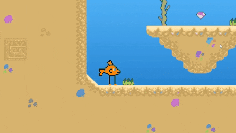

Caerwyn
.dev
Bartley
, graduate game designer.
Menu
Caerwyn Bartley
Graduate Game Designer
Currently Viewing: Project RCG
Home
My Work
About me
Contact me

Project RCG
Random Controls Game
<a href="https://caerwyn.itch.io/rcg">Project RCG by Caerwyn Bartley, Alex Smits, Sebastian Biala-Learmonth</a>
Page in development.
Check out the other games by Caerwyn.
Learn more about Caerwyn.
Email |
contact@caerwyn.dev
Phone |
+61 455 035 521
Country |
Sydney, Australia